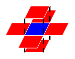

PAT A 91 - 100
A1091. Acute Stroke (30)
One important factor to identify acute stroke (急性脑卒中) is the volume of the stroke core. Given the results of image analysis in which the core regions are identified in each MRI slice, your job is to calculate the volume of the stroke core.
Input Specification:
Each input file contains one test case. For each case, the first line contains 4 positive integers: M, N, L and T, where M and N are the sizes of each slice (i.e. pixels of a slice are in an M by N matrix, and the maximum resolution is 1286 by 128); L (<=60) is the number of slices of a brain; and T is the integer threshold (i.e. if the volume of a connected core is less than T, then that core must not be counted).
Then L slices are given. Each slice is represented by an M by N matrix of 0's and 1's, where 1 represents a pixel of stroke, and 0 means normal. Since the thickness of a slice is a constant, we only have to count the number of 1's to obtain the volume. However, there might be several separated core regions in a brain, and only those with their volumes no less than T are counted. Two pixels are "connected" and hence belong to the same region if they share a common side, as shown by Figure 1 where all the 6 red pixels are connected to the blue one.

Output Specification:
For each case, output in a line the total volume of the stroke core.
Sample Input:
3 4 5 2
1 1 1 1
1 1 1 1
1 1 1 1
0 0 1 1
0 0 1 1
0 0 1 1
1 0 1 1
0 1 0 0
0 0 0 0
1 0 1 1
0 0 0 0
0 0 0 0
0 0 0 1
0 0 0 1
1 0 0 0
Sample Output:
26
未完全通过，25/30，错误原因为段错误，应该是使用 DFS 递归过深，内存超限；；查看提交
换为 BFS 后，全部通过
#include <iostream>
#include <vector>
using namespace std;
int m, n, l, t;
vector<vector<vector<int>>> G;
vector<vector<vector<bool>>> vis;
int sum = 0, cnt = 0;
struct Direct {
int x, y, z;
Direct(int x, int y, int z): x(x), y(y), z(z) {};
};
Direct dir[6] = {
Direct(1, 0, 0), Direct(-1, 0, 0),
Direct(0, 1, 0), Direct(0, -1, 0),
Direct(0, 0, 1), Direct(0, 0, -1)
};
bool isValid (int x, int y, int z) {
if (0 <= x && x < l && 0 <= y && y < m && 0 <= z && z < n)
return true;
else
return false;
}
void dfs (int x, int y, int z) {
vis[x][y][z] = true;
cnt++;
for (int i = 0; i < 6; i++) {
int _x = x + dir[i].x;
int _y = y + dir[i].y;
int _z = z + dir[i].z;
if (isValid(_x, _y, _z) && !vis[_x][_y][_z] && G[_x][_y][_z] == 1)
dfs(_x, _y, _z);
}
}
int main () {
cin >> m >> n >> l >> t;
G.resize(l, vector<vector<int>>(m, vector<int>(n, 0)));
vis.resize(l, vector<vector<bool>>(m, vector<bool>(n, false)));
for (int i = 0; i < l; i++) {
for (int j = 0; j < m; j++) {
for (int k = 0; k < n; k++) {
cin >> G[i][j][k];
}
}
}
for (int x = 0; x < l; x++) {
for (int y = 0; y < m; y++) {
for (int z = 0; z < n; z++) {
if (G[x][y][z] == 1 && !vis[x][y][z]) {
cnt = 0;
dfs(x, y, z);
if (cnt >= t) sum += cnt;
}
}
}
}
cout << sum << endl;
return 0;
}
换为 BFS 后，全部通过
#include <iostream>
#include <vector>
#include <queue>
using namespace std;
int m, n, l, t;
vector<vector<vector<int>>> G;
vector<vector<vector<bool>>> vis;
struct Coord {
int x, y, z;
Coord(int x, int y, int z): x(x), y(y), z(z) {};
};
Coord dir[6] = {
Coord(1, 0, 0), Coord(-1, 0, 0),
Coord(0, 1, 0), Coord(0, -1, 0),
Coord(0, 0, 1), Coord(0, 0, -1)
};
bool isValid (int x, int y, int z) {
if (0 <= x && x < l && 0 <= y && y < m && 0 <= z && z < n)
return true;
else
return false;
}
int bfs (int x, int y, int z) {
int cnt = 0;
queue<Coord> q;
q.push(Coord(x, y, z));
vis[x][y][z] = true;
while (!q.empty()) {
Coord now = q.front();
q.pop();
cnt++;
for (int i = 0; i < 6; i++) {
int _x = now.x + dir[i].x;
int _y = now.y + dir[i].y;
int _z = now.z + dir[i].z;
if (isValid(_x, _y, _z) && !vis[_x][_y][_z] && G[_x][_y][_z] == 1) {
vis[_x][_y][_z] = true;
q.push(Coord(_x, _y, _z));
}
}
}
return (cnt >= t) ? cnt : 0;
}
int main () {
cin >> m >> n >> l >> t;
G.resize(l, vector<vector<int>>(m, vector<int>(n, 0)));
vis.resize(l, vector<vector<bool>>(m, vector<bool>(n, false)));
for (int i = 0; i < l; i++) {
for (int j = 0; j < m; j++) {
for (int k = 0; k < n; k++) {
cin >> G[i][j][k];
}
}
}
int sum = 0;
for (int x = 0; x < l; x++) {
for (int y = 0; y < m; y++) {
for (int z = 0; z < n; z++) {
if (G[x][y][z] == 1 && !vis[x][y][z])
sum += bfs(x, y, z);
}
}
}
cout << sum << endl;
return 0;
}
A1092. To Buy or Not to Buy (20)
Eva would like to make a string of beads with her favorite colors so she went to a small shop to buy some beads. There were many colorful strings of beads. However the owner of the shop would only sell the strings in whole pieces. Hence Eva must check whether a string in the shop contains all the beads she needs. She now comes to you for help: if the answer is "Yes", please tell her the number of extra beads she has to buy; or if the answer is "No", please tell her the number of beads missing from the string.
For the sake of simplicity, let's use the characters in the ranges [0-9], [a-z], and [A-Z] to represent the colors. For example, the 3rd string in Figure 1 is the one that Eva would like to make. Then the 1st string is okay since it contains all the necessary beads with 8 extra ones; yet the 2nd one is not since there is no black bead and one less red bead.
Input Specification:
Each input file contains one test case. Each case gives in two lines the strings of no more than 1000 beads which belong to the shop owner and Eva, respectively.
Output Specification:
For each test case, print your answer in one line. If the answer is "Yes", then also output the number of extra beads Eva has to buy; or if the answer is "No", then also output the number of beads missing from the string. There must be exactly 1 space between the answer and the number.
Sample Input 1:
ppRYYGrrYBR2258
YrR8RrY
Sample Output 1:
Yes 8
Sample Input 2:
ppRYYGrrYB225
YrR8RrY
Sample Output 1:
No 2
#include <iostream>
#include <map>
#include <string>
using namespace std;
int main (int argc, const char * argv[]) {
string sell, buy;
int missing = 0;
map<char, int> letters1, letters2;
cin >> sell >> buy;
for (int i = 0; i < sell.length(); i++) {
if (letters1.find(sell[i]) == letters1.end()) letters1[sell[i]] = 1;
else letters1[sell[i]]++;
}
for (int i = 0; i < buy.length(); i++) {
if (letters2.find(buy[i]) == letters2.end()) letters2[buy[i]] = 1;
else letters2[buy[i]]++;
}
for (map<char, int>::iterator it = letters2.begin(); it != letters2.end(); it++) {
if (it->second > letters1[it->first])
missing += it->second - letters1[it->first];
}
if (missing == 0) cout << "Yes " << sell.length() - buy.length() << endl;
else cout << "No " << missing << endl;
return 0;
}
A1093. Count PAT's (25)
The string APPAPT contains two PAT's as substrings. The first one is formed by the 2nd, the 4th, and the 6th characters, and the second one is formed by the 3rd, the 4th, and the 6th characters.
Now given any string, you are supposed to tell the number of PAT's contained in the string.
Input Specification:
Each input file contains one test case. For each case, there is only one line giving a string of no more than 105 characters containing only P, A, or T.
Output Specification:
For each test case, print in one line the number of PAT's contained in the string. Since the result may be a huge number, you only have to output the result moded by 1000000007.
Sample Input:
APPAPT
Sample Output:
2
动态规划解法
#include <iostream>
#include <vector>
#include <string>
using namespace std;
const int MOD = 1000000007;
int main (int argc, const char * argv[]) {
string str, target = "PAT";
cin >> str;
vector<int> dp(target.length(), 0);
for (int i = 0; i < str.length(); i++) {
for (int j = 0; j < target.length(); j++) {
if (str[i] == target[j]) {
if (j == 0) dp[j] = (dp[j] + 1) % MOD;
else dp[j] = (dp[j] + dp[j - 1]) % MOD;
}
}
}
cout << dp[target.length() - 1] << endl;
return 0;
}
《算法笔记》中的解法，但不具有一般性
#include <iostream>
#include <string>
#include <vector>
using namespace std;
const int MOD = 1000000007;
int main (int argc, const char * argv[]) {
string str;
cin >> str;
vector<int> leftP(str.length(), 0);
int rightT = 0, count = 0;
for (int i = 0; i < str.length(); i++) {
if (i > 0)
leftP[i] = leftP[i - 1];
if (str[i] == 'P')
leftP[i]++;
}
for (int i = str.length() - 1; i >= 0; i--) {
if (str[i] == 'T') {
rightT++;
} else if (str[i] == 'A') {
count = (count + leftP[i] * rightT) % MOD;
}
}
cout << count << endl;
return 0;
}
A1094. The Largest Generation (25)
A family hierarchy is usually presented by a pedigree tree where all the nodes on the same level belong to the same generation. Your task is to find the generation with the largest population.
Input Specification:
Each input file contains one test case. Each case starts with two positive integers N (< 100) which is the total number of family members in the tree (and hence assume that all the members are numbered from 01 to N), and M (< N) which is the number of family members who have children. Then M lines follow, each contains the information of a family member in the following format:
ID K ID[1] ID[2] ... ID[K]
where ID is a two-digit number representing a family member, K (>0) is the number of his/her children, followed by a sequence of two-digit ID's of his/her children. For the sake of simplicity, let us fix the root ID to be 01. All the numbers in a line are separated by a space.
Output Specification:
For each test case, print in one line the largest population number and the level of the corresponding generation. It is assumed that such a generation is unique, and the root level is defined to be 1.
Sample Input:
23 13
21 1 23
01 4 03 02 04 05
03 3 06 07 08
06 2 12 13
13 1 21
08 2 15 16
02 2 09 10
11 2 19 20
17 1 22
05 1 11
07 1 14
09 1 17
10 1 18
Sample Output:
9 4
BFS解法
#include <iostream>
#include <vector>
#include <queue>
#include <algorithm>
using namespace std;
void bfs (vector<vector<int>> family, vector<int> &level, vector<int> &generation) {
queue<int> q;
q.push(1);
level[1] = 1;
generation[1]++;
while (!q.empty()) {
int front = q.front();
q.pop();
for (int i = 0; i < family[front].size(); i++) {
q.push(family[front][i]);
level[family[front][i]] = level[front] + 1;
generation[level[family[front][i]]]++;
}
}
}
int main (int argc, const char * argv[]) {
int n, m, id, k, child;
cin >> n >> m;
vector<vector<int>> family(n + 1);
vector<int> level(n + 1, 0);
vector<int> generation(n + 1, 0);
while (m--) {
cin >> id >> k;
while (k--) {
cin >> child;
family[id].push_back(child);
}
}
bfs(family, level, generation);
int index, largest = 0;
for (int i = 1; generation[i] > 0 && i < generation.size(); i++) {
if (generation[i] > largest) {
index = i;
largest = generation[i];
}
}
cout << largest << " " << index << endl;
return 0;
}
DFS解法
#include <iostream>
#include <vector>
using namespace std;
void dfs (int now, vector<vector<int>> family, vector<int> &level_num, int level) {
level_num[level]++;
for (int i = 0; i < family[now].size(); i++) {
dfs(family[now][i], family, level_num, level + 1);
}
}
int main (int argc, const char * argv[]) {
int n, m, k, child, id;
cin >> n >> m;
vector<vector<int>> family(n + 1);
vector<int> level_num(n + 1);
while (m--) {
cin >> id >> k;
while (k--) {
cin >> child;
family[id].push_back(child);
}
}
dfs(1, family, level_num, 1);
int maxNodeNum = 0, maxLevel = 0;
for (int i = 1; level_num[i] != 0; i++) {
if (level_num[i] > maxNodeNum) {
maxNodeNum = level_num[i];
maxLevel = i;
}
}
cout << maxNodeNum << " " << maxLevel;
return 0;
}
A1095. Cars on Campus (30)
Zhejiang University has 6 campuses and a lot of gates. From each gate we can collect the in/out times and the plate numbers of the cars crossing the gate. Now with all the information available, you are supposed to tell, at any specific time point, the number of cars parking on campus, and at the end of the day find the cars that have parked for the longest time period.
Input Specification:
Each input file contains one test case. Each case starts with two positive integers N (<= 10000), the number of records, and K (<= 80000) the number of queries. Then N lines follow, each gives a record in the format
plate_number hh:mm:ss status
where plate_number is a string of 7 English capital letters or 1-digit numbers; hh:mm:ss represents the time point in a day by hour:minute:second, with the earliest time being 00:00:00 and the latest 23:59:59; and status is either in or out.
Note that all times will be within a single day. Each "in" record is paired with the chronologically next record for the same car provided it is an "out" record. Any "in" records that are not paired with an "out" record are ignored, as are "out" records not paired with an "in" record. It is guaranteed that at least one car is well paired in the input, and no car is both "in" and "out" at the same moment. Times are recorded using a 24-hour clock.
Then K lines of queries follow, each gives a time point in the format hh:mm:ss. Note: the queries are given in ascending order of the times.
Output Specification:
For each query, output in a line the total number of cars parking on campus. The last line of output is supposed to give the plate number of the car that has parked for the longest time period, and the corresponding time length. If such a car is not unique, then output all of their plate numbers in a line in alphabetical order, separated by a space.
Sample Input:
16 7
JH007BD 18:00:01 in
ZD00001 11:30:08 out
DB8888A 13:00:00 out
ZA3Q625 23:59:50 out
ZA133CH 10:23:00 in
ZD00001 04:09:59 in
JH007BD 05:09:59 in
ZA3Q625 11:42:01 out
JH007BD 05:10:33 in
ZA3Q625 06:30:50 in
JH007BD 12:23:42 out
ZA3Q625 23:55:00 in
JH007BD 12:24:23 out
ZA133CH 17:11:22 out
JH007BD 18:07:01 out
DB8888A 06:30:50 in
05:10:00
06:30:50
11:00:00
12:23:42
14:00:00
18:00:00
23:59:00
Sample Output:
1
4
5
2
1
0
1
JH007BD ZD00001 07:20:09
未完全通过，27/30
#include <iostream>
#include <string>
#include <vector>
#include <map>
#include <deque>
#include <algorithm>
using namespace std;
struct Car {
deque<int> in_time, out_time;
};
int time2sec (string time) {
int hour = atoi(time.substr(0, 2).c_str());
int minute = atoi(time.substr(3, 2).c_str());
int second = atoi(time.substr(6, 2).c_str());
return hour * 3600 + minute * 60 + second;
}
void sec2time (int seconds) {
int hour = seconds / 3600;
seconds %= 3600;
int minute = seconds / 60;
seconds %= 60;
printf("%02d:%02d:%02d\n", hour, minute, seconds);
}
int main (int argc, const char * argv[]) {
int n, k, seconds;
string plate, time, status;
map<string, Car> m;
vector<int> acts(60 * 60 * 24, 0);
int max_park_time = 0;
vector<string> plates;
vector<string> queries;
cin >> n >> k;
while (n--) {
cin >> plate >> time >> status;
seconds = time2sec(time);
if (m.find(plate) == m.end()) m[plate] = Car();
if (status == "in") {
m[plate].in_time.push_back(seconds);
} else if (status == "out") {
m[plate].out_time.push_back(seconds);
}
}
while (k--) {
cin >> time;
queries.push_back(time);
}
for (map<string, Car>::iterator it = m.begin(); it != m.end(); it++) {
Car car = it->second;
sort(car.in_time.begin(), car.in_time.end());
sort(car.out_time.begin(), car.out_time.end());
int park_time = 0;
while (car.in_time.size() > 0 && car.out_time.size() > 0) {
while (car.out_time[0] < car.in_time[0]) car.out_time.pop_front();
while (car.in_time.size() >= 2 && car.in_time[1] < car.out_time[0]) car.in_time.pop_front();
if (car.in_time.empty() || car.out_time.empty()) break;
park_time += car.out_time[0] - car.in_time[0];
acts[car.in_time[0]] += 1;
acts[car.out_time[0]] += -1;
car.in_time.pop_front();
car.out_time.pop_front();
}
if (park_time > max_park_time) {
plates.clear();
plates.push_back(it->first);
max_park_time = park_time;
} else if (park_time == max_park_time){
plates.push_back(it->first);
}
}
int count = 0, i = 0;
for (int j = 0; j < queries.size(); j++) {
time = queries[j];
seconds = time2sec(time);
for ( ; i <= seconds; i++)
count += acts[i];
cout << count << endl;
}
for (int i = 0; i < plates.size(); i++)
cout << plates[i] << " ";
sec2time(max_park_time);
return 0;
}
A1096. Consecutive Factors (20)
Among all the factors of a positive integer N, there may exist several consecutive numbers. For example, 630 can be factored as 356*7, where 5, 6, and 7 are the three consecutive numbers. Now given any positive N, you are supposed to find the maximum number of consecutive factors, and list the smallest sequence of the consecutive factors.
Input Specification:
Each input file contains one test case, which gives the integer N (1 < N < 231).
Output Specification:
For each test case, print in the first line the maximum number of consecutive factors. Then in the second line, print the smallest sequence of the consecutive factors in the format "factor[1]factor[2]...*factor[k]", where the factors are listed in increasing order, and 1 is NOT included.
Sample Input:
630
Sample Output:
3
5*6*7
未完全通过，16/20
#include <iostream>
#include <cmath>
using namespace std;
int main (int argc, const char * argv[]) {
int n, factor = 2;
cin >> n;
int max_factor = sqrt(n);
int max_len = 0, start = -1;
for (int i = 2; i < max_factor; i++) {
int result = 1;
for (int j = i; j < i + 12; j++) { // 2 的 31 次方是介于 12 的阶乘和 13 的阶乘之间的大小的
result *= j;
if (n % result == 0) {
if (j - i + 1 > max_len) {
max_len = j - i + 1;
start = i;
}
}
}
}
cout << max_len << endl;
for (int i = start; i < start + max_len; i++) {
cout << i;
if (i < start + max_len - 1) cout << "*";
}
cout << endl;
return 0;
}
A1097. Deduplication on a Linked List (25)
Given a singly linked list L with integer keys, you are supposed to remove the nodes with duplicated absolute values of the keys. That is, for each value K, only the first node of which the value or absolute value of its key equals K will be kept. At the mean time, all the removed nodes must be kept in a separate list. For example, given L being 21→-15→-15→-7→15, you must output 21→-15→-7, and the removed list -15→15.
Input Specification:
Each input file contains one test case. For each case, the first line contains the address of the first node, and a positive N (<= 105) which is the total number of nodes. The address of a node is a 5-digit nonnegative integer, and NULL is represented by -1.
Then N lines follow, each describes a node in the format:
Address Key Next
where Address is the position of the node, Key is an integer of which absolute value is no more than 104, and Next is the position of the next node.
Output Specification:
For each case, output the resulting linked list first, then the removed list. Each node occupies a line, and is printed in the same format as in the input.
Sample Input:
00100 5
99999 -7 87654
23854 -15 00000
87654 15 -1
00000 -15 99999
00100 21 23854
Sample Output:
00100 21 23854
23854 -15 99999
99999 -7 -1
00000 -15 87654
87654 15 -1
#include <iostream>
#include <vector>
#include <map>
using namespace std;
const int MAX_ADDR = 100000;
struct Node {
int key, next;
Node(int k, int n): key(k), next(n) {};
};
Node* list[MAX_ADDR];
void display (int head) {
int now_addr = head;
while (now_addr != -1) {
if (list[now_addr]->next == -1)
printf("%05d %d -1\n", now_addr, list[now_addr]->key, list[now_addr]->next);
else
printf("%05d %d %05d\n", now_addr, list[now_addr]->key, list[now_addr]->next);
now_addr = list[now_addr]->next;
}
}
int main (int argc, const char * argv[]) {
int head, n, addr, key, next;
cin >> head >> n;
while (n--) {
cin >> addr >> key >> next;
list[addr] = new Node(key, next);
}
map<int, int> values;
int r_head = -1, r_prev = -1; // remove list 的 head 地址和上一个节点的地址
Node* now = list[head];
int now_addr = head, prev_addr = -1, next_addr;
while (now_addr != -1) {
now = list[now_addr];
next_addr = now->next;
if (values.find(abs(now->key)) == values.end()) {
values[abs(now->key)] = 1;
list[now_addr]->next = -1;
if (prev_addr != -1) list[prev_addr]->next = now_addr;
prev_addr = now_addr;
} else {
if (r_prev == -1) {
r_head = now_addr;
} else {
list[r_prev]->next = now_addr;
}
list[now_addr]->next = -1;
r_prev = now_addr;
}
now_addr = next_addr;
}
display(head);
display(r_head);
return 0;
}
A1098. Insertion or Heap Sort (25)
According to Wikipedia:
Insertion sort iterates, consuming one input element each repetition, and growing a sorted output list. At each iteration, insertion sort removes one element from the input data, finds the location it belongs within the sorted list, and inserts it there. It repeats until no input elements remain.
Heap sort divides its input into a sorted and an unsorted region, and it iteratively shrinks the unsorted region by extracting the largest element and moving that to the sorted region. it involves the use of a heap data structure rather than a linear-time search to find the maximum.
Now given the initial sequence of integers, together with a sequence which is a result of several iterations of some sorting method, can you tell which sorting method we are using?
Input Specification:
Each input file contains one test case. For each case, the first line gives a positive integer N (<=100). Then in the next line, N integers are given as the initial sequence. The last line contains the partially sorted sequence of the N numbers. It is assumed that the target sequence is always ascending. All the numbers in a line are separated by a space.
Output Specification:
For each test case, print in the first line either "Insertion Sort" or "Heap Sort" to indicate the method used to obtain the partial result. Then run this method for one more iteration and output in the second line the resuling sequence. It is guaranteed that the answer is unique for each test case. All the numbers in a line must be separated by a space, and there must be no extra space at the end of the line.
Sample Input 1:
10
3 1 2 8 7 5 9 4 6 0
1 2 3 7 8 5 9 4 6 0
Sample Output 1:
Insertion Sort
1 2 3 5 7 8 9 4 6 0
Sample Input 2:
10
3 1 2 8 7 5 9 4 6 0
6 4 5 1 0 3 2 7 8 9
Sample Output 2:
Heap Sort
5 4 3 1 0 2 6 7 8 9
#include <iostream>
#include <vector>
using namespace std;
bool isSame (vector<int> ori, vector<int> sort) {
for (int i = 0; i < ori.size(); i++)
if (ori[i] != sort[i]) return false;
return true;
}
void display (vector<int> v) {
for (int i = 0; i < v.size(); i++) {
cout << v[i];
if (i < v.size() - 1) cout << " ";
}
cout << endl;
}
void swap (vector<int> &v, int i, int j) {
int temp = v[i];
v[i] = v[j];
v[j] = temp;
}
void sink (vector<int> &v, int i, int len) {
while (i < len) {
int child = 2 * i + 1;
if (child + 1 < len && v[child] < v[child + 1]) child = child + 1;
if (child < len && v[i] < v[child]) swap(v, i, child);
else break;
i = child;
}
}
void judgeSort (vector<int> ori, vector<int> sort) {
vector<int> ori_copy(ori);
// Insertion Sort
bool flag = false;
for (int i = 1; i < ori.size(); i++) {
for (int j = i; j > 0 && ori[j] < ori[j - 1]; j--) {
swap(ori, j, j - 1);
}
if (flag) { display(ori); return; }
if (isSame(ori, sort)) {
cout << "Insertion Sort" << endl;
flag = true;
}
}
// Heap Sort
ori = ori_copy;
for (int i = (ori.size() - 1) / 2; i >= 0; i--)
sink(ori, i, ori.size());
for (int i = ori.size() - 1; i > 0; i--) {
swap(ori, 0, i);
sink(ori, 0, i);
if (flag) { display(ori); return; }
if (isSame(ori, sort)) {
cout << "Heap Sort" << endl;
flag = true;
}
}
}
int main (int argc, const char * argv[]) {
int n, num;
cin >> n;
vector<int> ori, sort;
for (int i = 0; i < n; i++) {
cin >> num;
ori.push_back(num);
}
for (int i = 0; i < n; i++) {
cin >> num;
sort.push_back(num);
}
judgeSort(ori, sort);
return 0;
}
A1099. Build A Binary Search Tree (30)
A Binary Search Tree (BST) is recursively defined as a binary tree which has the following properties:
- The left subtree of a node contains only nodes with keys less than the node's key.
- The right subtree of a node contains only nodes with keys greater than or equal to the node's key.
- Both the left and right subtrees must also be binary search trees.
Given the structure of a binary tree and a sequence of distinct integer keys, there is only one way to fill these keys into the tree so that the resulting tree satisfies the definition of a BST. You are supposed to output the level order traversal sequence of that tree. The sample is illustrated by Figure 1 and 2.

Input Specification:
Each input file contains one test case. For each case, the first line gives a positive integer N (<=100) which is the total number of nodes in the tree. The next N lines each contains the left and the right children of a node in the format "left_index right_index", provided that the nodes are numbered from 0 to N-1, and 0 is always the root. If one child is missing, then -1 will represent the NULL child pointer. Finally N distinct integer keys are given in the last line.
Output Specification:
For each test case, print in one line the level order traversal sequence of that tree. All the numbers must be separated by a space, with no extra space at the end of the line.
Sample Input:
9
1 6
2 3
-1 -1
-1 4
5 -1
-1 -1
7 -1
-1 8
-1 -1
73 45 11 58 82 25 67 38 42
Sample Output:
58 25 82 11 38 67 45 73 42
#include <iostream>
#include <vector>
#include <queue>
#include <algorithm>
using namespace std;
struct TreeNode {
int val;
int left, right;
TreeNode(): val(-1), left(-1), right(-1) {};
};
void inOrder (int root, vector<TreeNode> &tree, vector<int> vals, int &i) {
if (tree[root].left != -1) inOrder(tree[root].left, tree, vals, i);
tree[root].val = vals[i];
i++;
if (tree[root].right != -1) inOrder(tree[root].right, tree, vals, i);
}
vector<int> levelOrder (int root, vector<TreeNode> tree) {
queue<int> q;
q.push(root);
vector<int> level;
while (!q.empty()) {
int front = q.front();
level.push_back(tree[front].val);
q.pop();
if (tree[front].left != -1) q.push(tree[front].left);
if (tree[front].right != -1) q.push(tree[front].right);
}
return level;
}
int main (int argc, const char * argv[]) {
int n, l, r, val;
cin >> n;
vector<TreeNode> tree(n, TreeNode());
for (int i = 0; i < n; i++) {
cin >> l >> r;
tree[i].left = l;
tree[i].right = r;
}
vector<int> vals;
for (int i = 0; i < n; i++) {
cin >> val;
vals.push_back(val);
}
int index = 0;
sort(vals.begin(), vals.end());
inOrder(0, tree, vals, index);
vector<int> level = levelOrder(0, tree);
for (int i = 0; i < level.size(); i++) {
cout << level[i];
if (i < level.size() - 1) cout << " ";
}
return 0;
}
A1100. Mars Numbers (20)
People on Mars count their numbers with base 13:
- Zero on Earth is called "tret" on Mars.
- The numbers 1 to 12 on Earch is called "jan, feb, mar, apr, may, jun, jly, aug, sep, oct, nov, dec" on Mars, respectively.
- For the next higher digit, Mars people name the 12 numbers as "tam, hel, maa, huh, tou, kes, hei, elo, syy, lok, mer, jou", respectively.
For examples, the number 29 on Earth is called "hel mar" on Mars; and "elo nov" on Mars corresponds to 115 on Earth. In order to help communication between people from these two planets, you are supposed to write a program for mutual translation between Earth and Mars number systems.
Input Specification:
Each input file contains one test case. For each case, the first line contains a positive integer N (< 100). Then N lines follow, each contains a number in [0, 169), given either in the form of an Earth number, or that of Mars.
Output Specification:
For each number, print in a line the corresponding number in the other language.
Sample Input:
4
29
5
elo nov
tam
Sample Output:
hel mar
may
115
13
易错之处在于，13、26、39... 要被翻译为 tam、hel、maa... ，而不是 tam tret、hel tret、maa tret...
#include <iostream>
#include <vector>
#include <string>
using namespace std;
int main (int argc, const char * argv[]) {
vector<string> digit({ "tret", "jan", "feb", "mar", "apr", "may", "jun", "jly", "aug", "sep", "oct", "nov", "dec" });
vector<string> h_digit({ "", "tam", "hel", "maa", "huh", "tou", "kes", "hei", "elo", "syy", "lok", "mer", "jou" });
int n;
string num;
cin >> n;
getline(cin, num);
while (n--) {
getline(cin, num);
if ('0' <= num[0] && num[0] <= '9') {
int number = atoi(num.c_str());
int higher = number / 13;
if (higher > 0) {
cout << h_digit[higher];
if (number % 13 != 0) cout << " " << digit[number % 13];
cout << endl;
} else {
cout << digit[number] << endl;
}
} else {
int pos = num.find(" ");
int result = 0;
if (pos != string::npos) {
string digit_mars = num.substr(0, pos);
for (int i = 0; i < h_digit.size(); i++)
if (h_digit[i] == digit_mars) result = i * 13;
num.erase(0, pos + 1);
}
for (int i = 0; i < h_digit.size(); i++)
if (h_digit[i] == num) result += i * 13;
for (int i = 0; i < digit.size(); i++)
if (digit[i] == num) result += i;
cout << result << endl;
}
}
return 0;
}